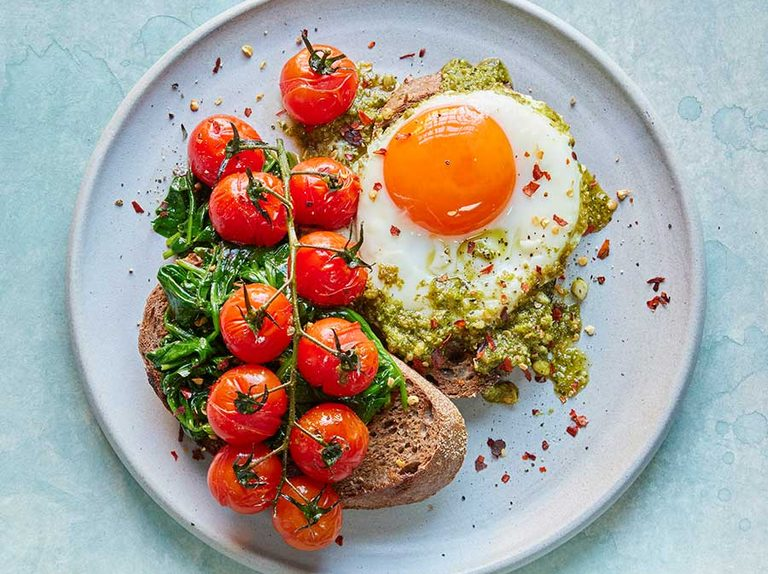

Healthy pesto eggs on toast

Description
This viral TikTok recipe for pesto eggs is wildly flavorful. The eggs are fried in a layer of pesto sauce and served on some crusty toast.
Ingredients
- 2-4 thin slices rye sourdough (about 70g total, depending on the size of the loaf)
- 2 eggs
- 170g tomatoes on-the-vine
- 160g baby spinach
- 1 garlic clove
- 1 tbsp pine nuts
- 1 tbsp rapeseed oil
- 1 tbsp finely grated parmesan or vegetarian alternative
Steps
- To make the pesto, peel the garlic clove and put in a small food processor along with the basil, pine nuts, oil and 2 tbsp water. Blitz until smooth, then stir in the cheese. Or, blitz using a hand blender.
- Toast the bread and divide between two plates. Cook the pesto in a frying pan over a medium heat for 30 seconds, stirring. Crack the eggs into one side of the pan, put the tomatoes in the other, and fry in the pesto until the eggs are cooked to your liking.
- Lift out the eggs and put each one on a slice of toast. Add the spinach to the pan with the tomatoes, turn the heat up to high and cook until wilted, about 2-3 mins. The tomatoes should be soft. Spoon the veg onto the other toast slice and sprinkle with the chilli flakes, if you like.